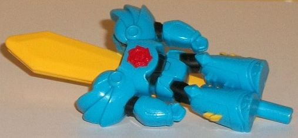
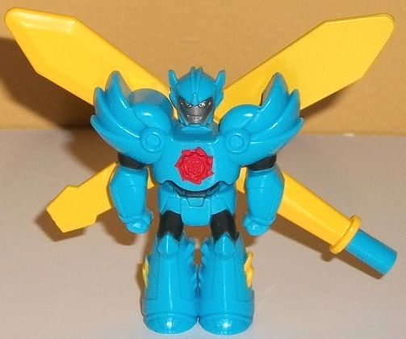
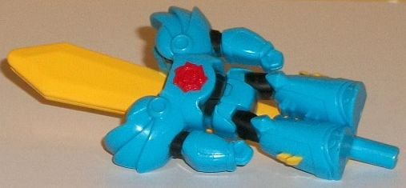
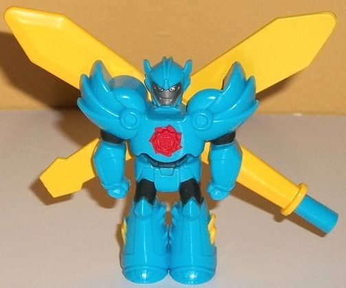
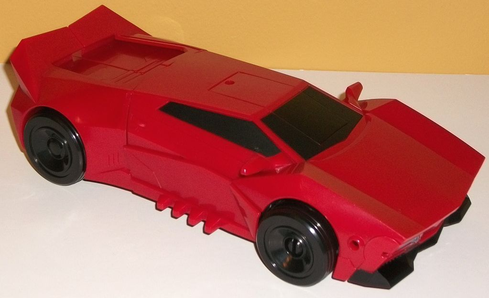
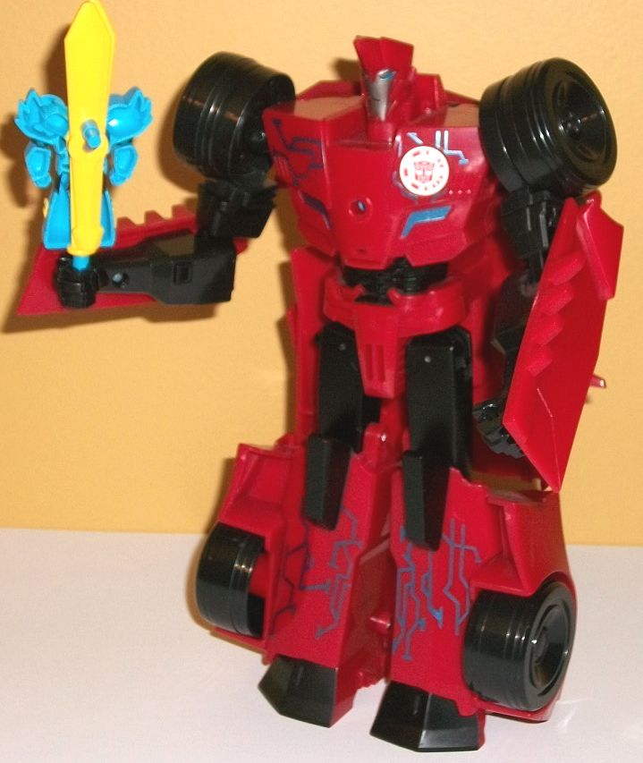

 
Allegiance : Autobot
Difficulty of Transformation : Very Easy
Color Scheme : Light blue, orangish "cheesy" yellow, and some black, silver, and red
Individual Rating : 3.7
 Windstrike
Windstrike


Allegiance
: Autobot
Difficulty of Transformation
: Very
Easy
Color Scheme
: Light blue, orangish
"cheesy" yellow, and some black, silver, and red
Individual Rating
: 3.7
Windbl-- I mean, WindSTRIKE's
alternate mode is a sword. Well... it's her robot mode with a sword for
a head. Really, it's pretty hilarious. I mean, it's awful, but it's also
hilarious. The entire body from the robot mode is just RIGHT THERE, but
instead of the head you've got half of the sword blade sticking out of
the head. There's a peg on the bottom to hold her, as well as a peg on
the back if you want to plug her into Sideswipe's chest for his gimmick.
The sword blade is a "cheesy" yellow-- the same type of shade used on many
of the Movie Bumblebee toys-- and it contrasts decently enough with the
light blue that's used for most of the main body of the robot-- er, sword.
Anyways, the robot parts themselves have some pretty neat stylized details,
like angular overlapping "armor plates" on the shoulders, little circular
bits on the feet, and armor-like details on the waist, arms, and upper
legs that make her look like she's wearing knight armor, with bits of black
paint on the mid-arms, upper legs, and stomach enhancing this look and
helping provide a bit of contrast as well. There's also a nifty red Autobot
"crest" detail on the chest, and some minor yellow-painted angular bits
on the lower legs. The proportions look pretty nice, too-- unfortunately,
the body can't move. Like, at all. It's one solid piece-- all the other
pieces on this toy are involved in the rotation of the sword and head pieces,
which is definitely a missed opportunity.
To "transform" Windstrike
to her robot mode, you just take the two halves of the sword piece and
then rotate one piece one way and one piece the other. The head folds up
in place, and she's got... well, two swords behind her. You can pose them
in a diagonal manner which looks... alright, but those are pretty darned
big, obvious extras, there. The head looks pretty good, with small antennae
on the sides, a couple of minor forehead details, and eyes that make her
look more obviously female, along with a mouth. Her face is painted silver,
but unfortunately so are the eyes, which doesn't look great. She can stand
up fairly well, though if you're looking at her from the top down you can
see the obvious gap in her left shoulder where her head slides in for sword
mode. The body, of course, is the same in this mode as in sword mode, and
she still doesn't have any articulation.
 Sideswipe
Sideswipe


Allegiance
: Autobot
Difficulty of Transformation
: Very
Easy
Color Scheme
: Dark red, black, and
some silver and metallic silvery blue
Individual Rating
: 6.3
Power Surge Sideswipe's
vehicle mode is a pretty large version of... well, what you'd expect--
a dark red-and-black sportscar. By and large if you've seen my reviews
of most other RID2015 Sideswipe toys, there's not much to say about this
mode. The dark red and black are basically the same exact shade as on most
of his other toys, and work just as well here as on those toys-- well,
okay, slightly worse, since the toy is so much bigger. Sometimes there's
just too much unbroken dark red. There's some black paint on the windows
and front bumper and a nice shade of metallic silvery blue on the headlights,
but that's about it as far as paint in this mode. The basic details are
all here-- the VERY basic details. The car doors and handles, the angular
bits on the front, and some angular taillights on the back bumper (which
is completely unpainted). All in all they could've added in a few extra
details, especially given the large size. There's also no Japanese symbols
on the sides, which really helped to break up the red back there, and I
wish was painted/molded onto the toy. There's no robot mode extras in this
mode except for on the aforementioned back end, where the bottom of the
feet are fairly obvious-- but really, it's fairly minor. On each side of
this mode, right near the front are peg holes for Power Surge Mini-Cons
like Windstrike. I'm glad that she can be held in this mode, but it's a
pretty odd part of the car to mount the Mini-Cons on.
Sideswipe's transformation
is VERY simple. You just stand him up on the back end, fold down the front
of the car behind his upper back, then push out and up his arms a bit and
separate the legs. That's it-- even given the RID2015 more simplistic toys
and the electronic gimmick, I think this is pretty underwhelming for a
$30 U.S. toy. I mean, he's got a LOADS of kibble-- the top of the car mode
is sticking out VERY obviously from behind his entire body and upper legs,
and it extends down to his knees so it can interfere with his hip articulation
a bit as well. The front section of the car also just hands unceremoniously
behind his upper back, though at least it folds up against the back a bit.
The lower legs are too chunky and have the sides of the car hanging off
them with the wheels, and on a lesser note the car doors also hang off
the arms, too (they're pretty small comparatively, though). As for the
actual "core" robot mode, he's got the basic details to make him accurate
to the show-- a faux stylized car hood-chest, some angular bits around
his abs (along with the holes for his speaker), some very basic details
on his legs and arms, and a head with his his characteristic smirk and
"punk hair". The black makes up more of the color scheme in this mode which
helps break up all that red some more, but there's also quite a bit of
metallic silvery blue paint-- not just on his eyes and faux car headlights
on the chest like you'd expect, but on really nifty circuitry detailing
on his upper chest and lower legs. This is presumably the "Power Surge"
he gets from linking with a Mini-Con. There's also the expected silver
on his face. For articulation in this mode, Sideswipe can move at the shoulders
(at three points), elbows (at two points), and at the hips (at two points).
No knee articulation unfortunately, which is quite frankly unacceptable
at this size. At least the upper body is fairly articulate. And now we
get to Sideswipe's electronic "Power Surge" gimmick. If you press down
on Sideswipe's head, you'll hear: "Mini-Con Power up!", "Power up for battle!",
"Thanks for the power upgrade!", "Two is better than one!", "This calls
for more firepower!" or "This battle's gonna be a blast!", in no particular
order. Unfortunately, it's not Sideswipe's show VA; just a kinda smarmy-sounding
teenager voice. If you leave him alone for a few seconds, you'll hear a
"power down" sound". You can also slot Windstrike into his chest, and you
can hear some slashing noises. In addition, when she's plugged in you can
hear some more slashing noises, "Sword Strike Activated", and "Enguarde"
(mixed in with his other voice clips). As part of the Power Surge gimmick,
you can ALSO plug in one of the other three Power Surge-sized Mini-Cons,
and he'll react uniquely to those, which is kinda cool. Plugging in Starscream's
Mini-Con Lancelon gets you: More slashing noises; "That's Sir Sideswipe
to you!"; "Swing and a hit!". Plugging in Bumblebee's Mini-Con Buzzstrike
gets you: Slashing noises; "Timmmberrrrr!"; more slashing noises. Finally,
plugging in Optimus Prime's Mini-Con Aerobolt gets you: Bird noises; "Woo-hoo,
now this 'bot can fly!", and "Soar to mach speed!"
Power Surge Sideswipe
is honestly a waste of $30 for all but completists. The transformation
is far too simplistic and limited for the robot mode even considering the
gimmick; he's got a TON of kibble; and Windstrike's "sword mode" is a joke.
The Power Surge gimmick is admittedly kinda cool, especially if you've
got other Power Surge Mini-Cons, but out of the $30 Power Surge toys this
is definitely the weakest overall. If you're looking for a simplsitic,
larger Sideswipe, the
3-step changer
is a superior mold.
Reviews by Beastbot